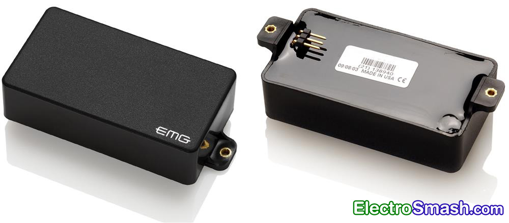
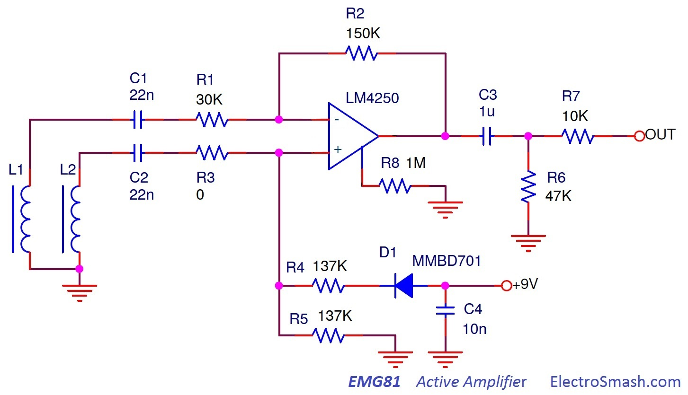
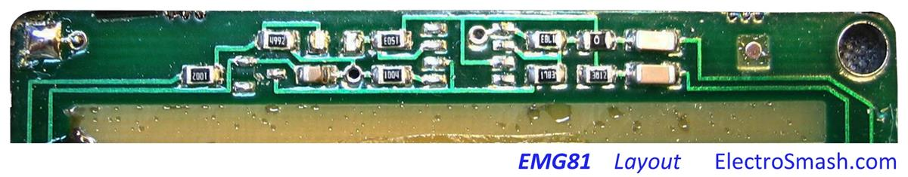
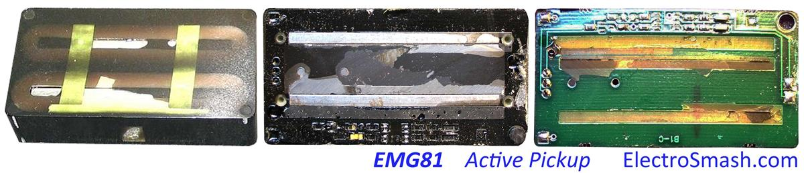
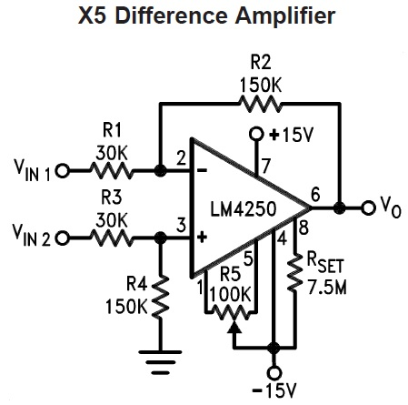
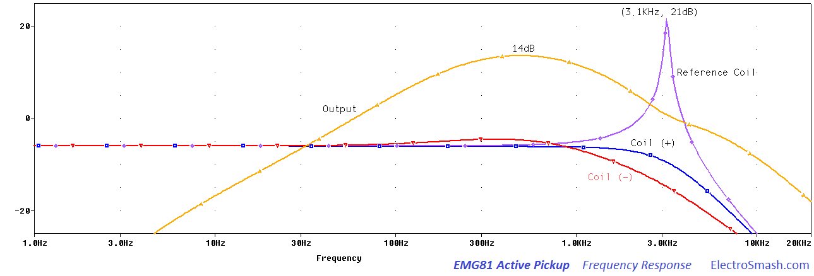
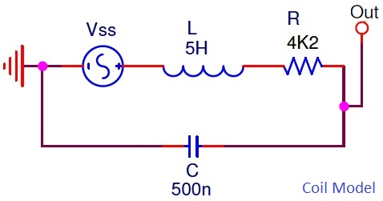
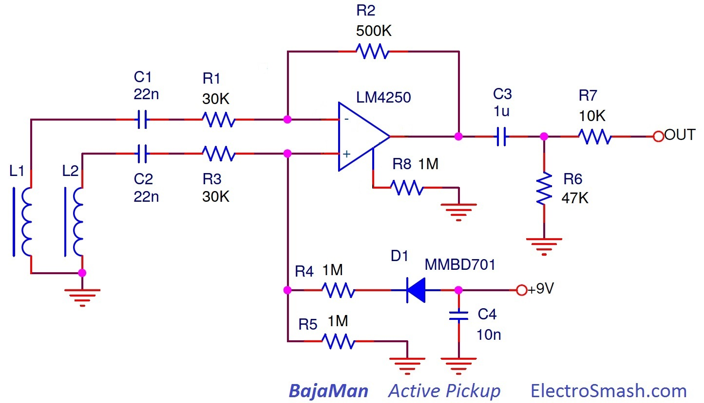
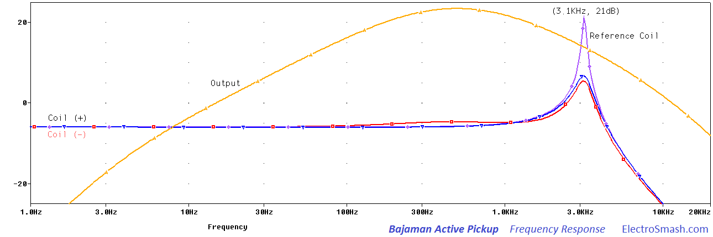
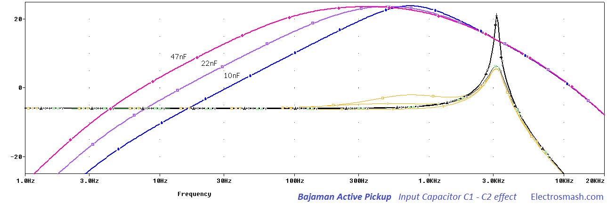

EMG81 Pickup Analysis
The EMG81 is an active humbucker guitar pickup manufactured by EMG Inc. It was developed in 1979 along with the EMG85 and released in 1981. The construction is similar to traditional U-shaped rail pickups with ceramic magnets.

The EMG 81 is commonly used in the bridge position, giving high end cut and fluid sustain. It has a three pin header output which makes it easy to replace and mod without iron solder. The EMG81 has two variants:
- EMG81TW features two separate pickups and preamps in a single pickup housing, allowing for single-coil and humbucking configuration.
- EMG81-X provides increased headroom giving the voicing an organic and open tone while still maintaining clarity and response.
EMG81 Pickup Specifications:
Resonant Frequency: 2.25 kHz.
Average/Max Output Voltage: 1.25/1.75.
Noise: -91 dBV.
Output Impedance: 10K Ohm.
Current Consumption: 80uA.
Coil Specifications:
Magnet: Ceramic 56x3x13mm.
Wire: 0,06mm PE.
Core: 54x3x12, 5mm solid steel.
Coil: 4,18 KΩ (one coil), wax potted, approx. 5500-6000 turns, h=7,5mm.
Bobbin: 64x13x9mm (or with tube legs 12,2mm).
Table of Contents:
1. Humbuckers Pickups.
2. EMG81 Schematic.
2.1 EMG81 Voltage Gain.
3. EMG-81 Frequency Response.
4. Electronic Humbucker Unbalance.
5. Bajaman Active Pickup.
6. Resources.
1. Humbuckers Pickups.
The passive humbucker pickup was invented by Joseph Ray Butts (U.S. Patent 2,892,371) and Seth Lover from Gibson (U.S. Patent 2,896,491). It is composed of two coils wound reverse to one another with the magnetic rails opposite in polarity in each winding. Ambient hum from power-supply transformers or radio frequencies reaches the coils as common-mode noise (inducing an electrical current with the same magnitude in each coil). Because the windings are reversed in each pickup coil, the hum signals are canceled (they are equal and in anti-phase).
A humbucker pickup senses a wider section of the string than a single-coil pickup and generally results in a less bright, smoother and fatter tone compared to single coils.
There are several configurations:
- Wired in Series: the most common setup. The overall inductance/resistance of the pickup is increased, which lowers its resonance frequency and attenuates the higher frequencies, giving a less trebly tone. The resulting signal that is output by the pickup is doubled in amplitude, thus more able to overdrive the early stages of the amplifier.
- Wired in Parallel: The equal common-mode hum interference is canceled, while the string variation signal sums. This method has a more neutral effect on resonant frequency; mutual capacitance is doubled and inductance/resistance is halved. The resulting tone is brighter, more single coil tone but keeping hum-canceling. A humbucker wired in parallel has about 30% less output of the same pickup wired in series.
- Split Mode: this wiring option shuts off one of the coils, resulting in a single-coil pickup. Hum canceling will be lost.
- Wiring Out-of-Phase: it is the electric connection of two coils in either series or parallel but with the signal polarities combined in a way that cancels out part of the signal (usually low frequencies).
- Unbalance Winding: Most of the humbuckers have their own degree of coil mismatch to achieve their signature sound. The more unbalanced they are, the more harmonic content they have. But also, it can start to bring in single coil hum.
Active Pickups:
Active pickups incorporate electronic circuitry, usually including a pre-amp and filters for tone modeling. Active pickups are relatively unaffected by cables and the input characteristics of subsequent devices and generally, they tend to have a smooth and even response:
- They give higher level output, more headroom, and dynamic range.
- They are less affected in tone by the amplifier/pedal input characteristics.
- They require an electrical source of energy (usually one or two 9/18V batteries) to operate.
2. EMG81 Schematic.
The EMG81 active pickup circuit is a simple Differential Amplifier:

A Differential Amplifier amplifies the voltage difference between two coils but it does not amplify the particular single coil voltage (hum common mode). Using an op-amp as a core, the circuit will achieve high differential-mode gain, good input impedance, and low output impedance which reduce pickups loading and tone sucking when connected to the next pedal/amp stage.
- The Set Current Resistor R8 programs the input bias current, input offset current, quiescent power consumption, slew rate, input noise and the gain-bandwidth product. The 1MΩ value sets the current draw to 80uA for a very long battery life.
- Diode D1 protects the device against reverse polarity connections.

The schematic is hard to trace since it is totally encapsulated in epoxy in the baseplate of the EMG81. The circuit is implemented using a single layer PCB, with SMD components.

The coils are wired in a differential mode, so it is close to parallel topology because the output of the two coils is summed together, but they do not interact the way passive parallel coils do, so the DC resistance/inductance is not halved.
The op-amp is labeled as EMG private IC number EMG001, but seems that they are using the National Semiconductors LM4250 part because of its low standby power consumption (500 nW). The design is indeed very close to the datasheet circuit x5 Difference Amplifier.

In the classic differential amplifier, the common and differential gain are calculated as:Making V(+)=V(-):
The two main factors multiplying Vcm and Vd are the common mode gain Gcm (or hum gain) and the Differential Gain Gd (or signal gain):
With this equations, the common-mode rejection ratio (CMRR) can be defined easily.
The CMRR shows the rejection in dB for the hum noise.
In the classic balanced Differential Amplifier topology, the values of the resistors are selected following R1R4=R2R3, simplifying the equations:
Giving a good differential gain (5), good hum voltage gain (0) and maximum CMRR.
In EMG81 circuit is deliberately imbalanced for tone modeling purposes, making R2=0 and R4=R4//R5=68K. Replacing these values in the general equations:
The numbers show that the EMG design will not reject the hum as good as the classic balanced design. This will not make much difference if any to the noise cancelling efficiency, 14.8 dB of hum rejection is still a nice number. As a rule of thumb in audio, 10dB in hum rejection is quite noticeable, 20 dB is very good and 30 dB and above is perfect.
EMG81 Output Impedance
The output impedance is defined by R7, the value is 10K.
3. EMG-81 Frequency Response.
The peak resonance of a coil is modified (shifted/attenuated/enhanced) depending on the load attached to it. There are several detailed articles explaining how the pickup resonance is altered by the load. The general idea is that lower values of load shift the resonant peak down in frequency, higher values give a much more pronounced resonance at a higher frequency for a brighter sounding pickup.
In the EMG81 circuit, each of the coils sees a different equivalent circuit from their output to ground. These external loads consist of resistance and capacitance from coil outputs to ground.
In passive pickups, the pots in the guitar, cable capacitance, and amp input impedance are an interactive system that modifies the coil response. On active pickups and thanks to the buffering properties of the differential amplifier, the response will be less affected by these factors.
The lack of series resistor in the non-inverting input (+) will shift the fres to higher frequencies, giving a single coil like sound. The coupling capacitors C1 and C2 create a high pass filter in 241Hz. It will additionally remove hum and super bass harmonics.

In the graph above, the signal in each of the coils output is shown in blue/red as well as the circuit output in orange. Unbalancing the differential amplifier is the simplest way to do tone modeling that is to say to move the resonant frequency of each of the coils in a different way to be amplified covering a wider spectrum of frequencies or double resonance. This enrichment will be traded for less hum canceling, but as far as it is below reasonable limits, there is no problem.
With this design topology, it is easy to create multiple humbucker models with distinct tonal signature by just changing some values in the circuit. Using the same PCB and even the same coils in different models.
For this simulation, the equivalent model of a coil is considered as R=4K2, L=5H, and C=500pF. It is shown in the above graph in purple color in isolated response configuration (without any load).

The real pickup coil equivalent model can be described electrically as an ideal inductance L in series with an Ohmic resistance R, and parallel to both a winding capacitance C
- The inductance is the most important parameter. Anything from 1 Henry for a low output single coil pickup up to around 9 Henries for high output humbuckers. This value depends on the number of turns and the physical shape of the coils.
- The characteristic resistance is anything from 1k up to 15k. The resistance value depends on the number of turns and the diameter of the wire.
- The distributed capacitance which is effectively in parallel with the inductance of the coil.
The combination of these factors results in tuned circuit with a well defined resonant frequency. The typical frequency response is a smooth resonant peak in the upper midrange, from 1KHz (humbuckers) to 8KHz (single coils). The resonant peak which gives each pickup its own individual character and about 90 percent of a pickup's sound characteristics.
The resonant frequency fres of the coil can be calculated as:
It determines the audio characteristics of the pickup, at 2 KHz the sound is warm and mellow, at 3 KHz brilliant or present, at 4 KHz piercing, and at 5 KHz or more brittle and thin.
Other common values for guitar coils are:
- Typical Single-Coil: R=5k, L=2H, C=100pF, fres=9.2 KHz
- Typical Humbucker: R=15K, L=10H, C=200pF, fres=3.6 KHz
4. Electronic Humbucker Unbalance.
Humbucker pickups are usually unbalanced during manufacturing, winding each coil with a different number of turns or using a specific wiring pattern (even, scattered, random…) in order to produce a different tone response.
The Dimarzio Dual Resonance patent US4501185 claims that winding the coils with the same number of turns but with wire of different gauge, the 60 Hz hum cancellation is emphasized without affecting the higher harmonics of the hum which may contribute to the desired tonal qualities.
Moreover, because of the difference in coils impedance resulting from different wire diameter, the overall frequency response can be selectively tailored to provide improved tone modeling.
Modern active pickups manufacturers like EMG or Seymour Duncan found the way to reduce costs in mass production, produce a signature sound, and create a dual resonance by making both humbucker coils mechanically equal but unbalance them electronically:
Seymour Duncan Blackouts: "Active humbuckers use unbalanced inputs in a differential preamp. The problem is, an unbalanced differential preamp is not very effective at canceling hum. Our engineers figured out how to capture the tone that players want in an active design, but using balanced inputs. The result is 12dB to 14dB less noise, plus more lows, more highs, and more output. Simply put, Blackouts have more tone than other active pickups."
Note that this description form Seymour Duncan also fits perfect with the EMG81 circuit analysis.
Designing unbalanced preamps can enrich the tone, widening the frequency response. The side effect is the increase of hum voltage gain (common mode).
5. Bajaman Active Pickup.
Bajaman proposed a DIY project inspired in EMG81 active circuit. The values of the resistors in the pre-amp are modified in order to create a different tone response. Bajaman designed a balanced differential amplifier with higher bias resistances (R4 and R5) of 1MΩ and feedback resistor R3 of 500KΩ.

- The coils will be loaded with 500KΩ approx, giving similar tone as most Gibson pickups used in Les Pauls and 335s which use 500k volume pots. Featuring more brightness because the fresonance will be higher and more pronounced compared to the EMG81.
- The voltage gain is increased, it is 16 times or 24dB (Gdif=R3/R1), this extra output makes the EMG81 lifeless in comparison. Noise cancellation is better than in EMG81 because of the balanced topology. In the other hand, the double resonance effect pursued by EMG will be lost.

- Coupling capacitors C1 and C2 can be decreased for more high-end response or increased for more bass:

6. Resources.
Seymour Duncan wiring Information.
Free Stompboxes Thread EMG81. (requires registration)
Music Electronics Forum EMG81 Thread1 and Thread2.
Frequency Response for guitar pickups.
The Secrets of Electric Guitar Pickups by BuildYourGuitar.
Active Pickups theory and Practice (in Russian).
Thanks for reading, all feedback is appreciated
Some Rights Reserved, you are free to copy, share, remix and use all material.
Trademarks, brand names and logos are the property of their respective owners.